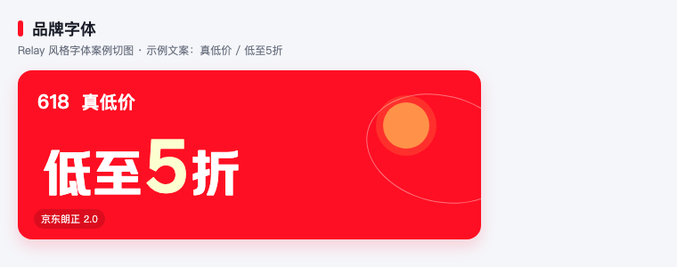
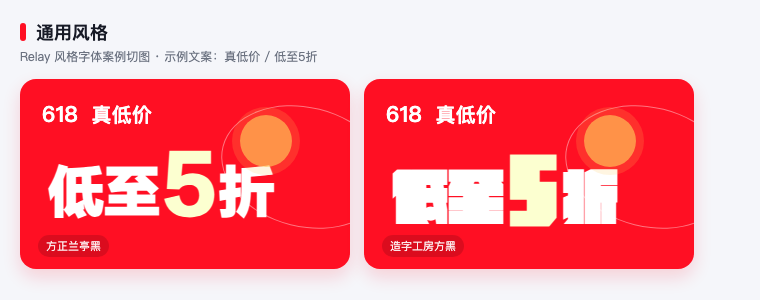
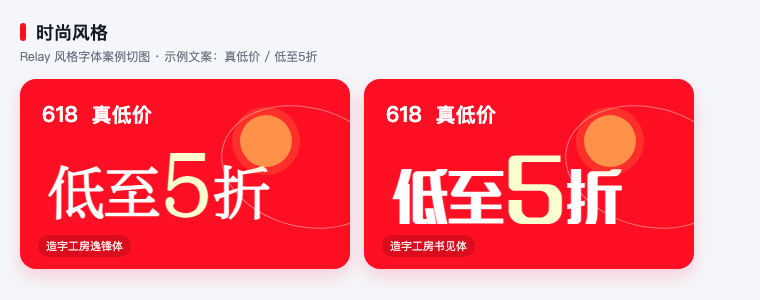
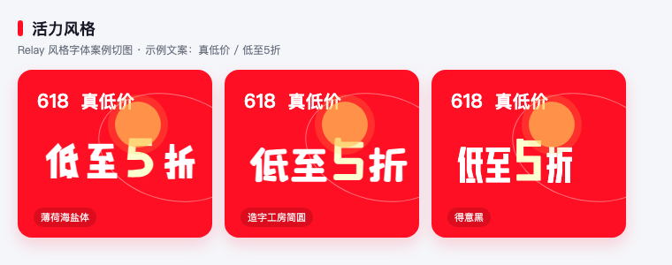
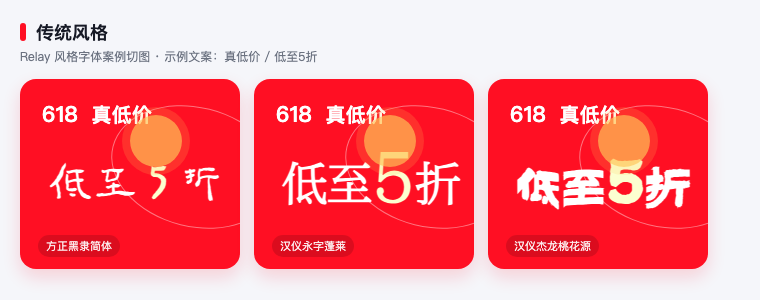
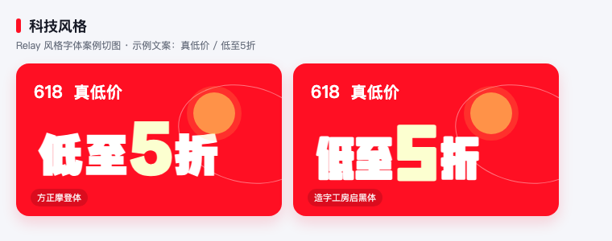

文字 · Typography 组件规范
适用范围:Marketing Design System / Foundations / Typography
样式来源:Relay V16.0 GUIDELINE 节点 13495:87 · Token 版本:tokens.json V16.0
关联 Foundation:color_title · color_text · color_primary · pingfang_regular/font_size_14_400
组件定义 What
文字 Typography 是 Marketing Design System 在 JD APP 16.0 基础文字规范之上的营销扩展，用于统一营销场景中的阅读型文字、数字权益表达与图形化字体使用边界。
一句话理解：普通信息用系统字体，营销重点再用数字强化或图形化字体；装饰必须服务信息，而不是抢走阅读焦点。
| 边界 | 说明 |
|---|
| 基础文字规范 | 继承字体家族、基准字号梯度、文本间距规则和字重体系。 |
| 营销视觉资产 | 图形化字体、主视觉标题和广告装饰文字可通过视觉切图或图形资源配置实现。 |
| 业务组件规格 | 本页定义文字策略，不替代商卡、feeds、广告位、头图等组件结构规格。 |
设计目标 Why
这套规范的目标是在营销氛围、阅读效率和转化信息之间建立稳定秩序，让用户先看到最重要的权益与价格，再理解商品和规则。
提升识别效率统一标题、正文、辅助、数字利益点的表达方式。
强化营销重点把优惠力度、价格、倒计时等核心转化信息放到正确层级。
降低维护成本动态内容用系统字体，固定视觉表达才使用图形化资产。
行为准则 Principle
核心原则：动态文字用系统字体；主视觉和广告可以更有表现力；数字强化只服务权益和价格。
- 系统字体优先用于动态渲染与阅读型内容。商品信息、规则说明、可变权益、倒计时等应保持可更新、可搜索、可适配。
- 图形化字体优先用于视觉强化与品牌表达场景。不用于动态文本及阅读型内容。
- 避免多个高强度信息同时强化。否则会削弱页面焦点与转化信息。
设计属性 Properties
Typography 的设计属性由实现方式、内容类型、字体风格、数字表达和颜色 token 共同组成。
前端动态渲染系统字体，适用于商品信息、规则说明、可变权益。
视觉切图配置图形化字体，适用于主视觉标题、广告和装饰文本。
数字表达扩展用于优惠、补贴、价格、倒计时，仍属于阅读型体系。
文字演示
营销主标题 / 频道活动主题
zhenghei_bold/font_size_24_600主视觉标题、活动会场标题。
模块标题 / 重点利益点
pingfang_semibold/font_size_16_600商卡标题、利益点标题。
正文说明 / 商品信息 / 规则提示
pingfang_regular/font_size_14_400动态文本与阅读型内容。
数字强化
倒计时与等宽数字
行高对照
单行重点信息
限时补贴 ¥299
行高贴合数字高度，适合价格与利益点。
多行阅读信息
会员专享补贴已生效
下单前请确认活动规则
多行文本需要更宽松行高，避免营销信息挤压。
风格字体
用于不同营销场景下的字体风格表达。在继承基础字体体系的基础上，根据活动主题与场景特征，扩展风格化字体能力，以满足不同视觉表达需求。风格化字体主要用于标题、主题文案及视觉强化内容，不用于阅读型文本内容。
品牌字体视觉特征：官方、可信、统一，体现平台品牌识别与品牌气质。适用场景：京东官方品牌露出、品牌活动、平台级营销场景及需要强化官方认知的内容。
静态切图：京东朗正 2.0- 品牌字体
- 京东朗正 2.0
- jingdonglangzhengti2:Bold
通用风格视觉特征：严谨、直接、高识别。适用场景：全品类通用的 S 级大促（双11、618）的核心利益点、日常通栏、百亿补贴等强转化且需要极速阅读的场景。
静态切图：方正兰亭黑 / 造字工房方黑- 方正兰亭黑 简体
- 造字工坊方黑
- FZLanTingHeiS:SemiBold / Bold
- 造字工房方黑体:Regular
时尚风格视觉特征：精致、轻盈、高级。适用场景：美妆护肤、服饰箱包、奢侈品、会员日及女性向营销场景。
静态切图：造字工房逸锋体 / 造字工房书见体- 造字工房逸锋体
- 造字工房书见体
- 造字工房逸锋体:Regular
- 造字工房书见体:Regular
活力风格视觉特征：年轻、亲和、趣味。适用场景：零食生鲜、母婴亲子、开学季、出游季、宠物节等年轻化营销场景。
静态切图：薄荷海盐体 / 造字工房简圆 / 得意黑- 造字工房薄荷海盐体
- 造字工房简圆
- 得意黑
- Smiley-Sans:Oblique
传统风格视觉特征：文化感、节庆感、仪式感。适用场景：春节、中秋节、端午节、国潮主题及传统文化营销场景。
静态切图：方正黑隶简体 / 汉仪永字蓬莱 / 汉仪杰龙桃花源- 方正黑隶简体
- 汉仪永字蓬莱
- 汉仪杰龙桃花源
- FZHeiLiS:Bold
- HYYongZiPengLai:W
- HYJieLongTaoHuaYuan:W
科技风格视觉特征：理性、未来感、秩序感。适用场景：3C 数码、家电、智能设备及科技主题营销场景。
静态切图：方正摩登体 / 造字工房启黑体- 方正摩登体
- 造字工房启黑体
- FZMoDengTiS:Bold
- 造字工房启黑体:Regular
| 使用边界 | 规则 |
|---|
| 实现方式 | 风格字体优先通过视觉切图、SVG 或图形资源配置承载。 |
| 动态内容 | 商品标题、价格、规则、倒计时等可变文本必须保留系统字体渲染能力。 |
| 资产登记 | 字体授权、字体包、CDN、可商用边界需要进入字体资产库或 _assets-cdn.md。 |
信息层级 Hierarchy
营销文字必须先确定信息优先级，再选择字体、字号、字重、颜色和留白。
Level 1优惠力度、价格、倒计时、主标题等直接影响转化的信息。
Level 2商品标题、利益点说明、模块标题等支持理解的信息。
Level 3规则说明、辅助描述、免责声明等弱化信息。
应用场景 Scenario
用 推荐场景
| 商卡、feeds、商品信息 | 使用系统字体和基础阅读型字号。 |
| 权益优惠、补贴折扣、价格利益点 | 使用数字表达扩展。 |
| 主视觉标题、广告位 | 可使用图形化字体或视觉切图。 |
| 品类 / 情绪 / 活动主题 | 按趣味、国风节庆、科技、潮流、轻奢等风格字体匹配营销氛围。 |
不用 避免场景
| 动态文本使用图形化字体切图 | 不可变更、不可搜索、不可适配。 |
| 阅读型正文使用复杂装饰字体 | 降低阅读效率。 |
组合关系 Composition
Typography 与基础文字 token、营销资产、业务模块共同组成营销表达体系。
| 关系 | 说明 |
|---|
| Foundation token | color_title、color_text、color_primary、pingfang_regular/font_size_14_400。 |
| 视觉资产 | 图形化字体、Logo、示例图进入 _assets-cdn.md 管理。 |
| 业务模块 | 商卡、feeds、广告位、头图等按各自组件结构规范落地。 |
AI 生成规则 AI Rule
AI 生成营销文字规范或页面时，必须先判断文字是否动态变化，再选择系统字体、数字表达或图形化资产。
给 AI 的一句话：动态内容不要切图，核心利益点可以强化，但每屏只允许少量高强度信息。
rules:
dynamic_text: use_system_font
graphic_font: fixed_visual_only
number_emphasis: price_discount_countdown
donts:
- no_graphic_font_for_dynamic_text
- no_multi_focus_over_emphasis
- no_image_only_core_copy
API 速查
引用
JD APP V16.0 Design System · 文字 规范 · 生成于 2026-06-10 · 样式 = Relay 节点 13495:87